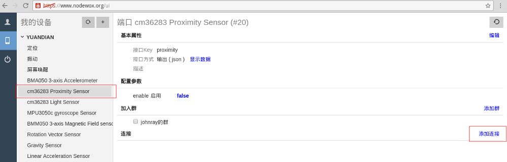
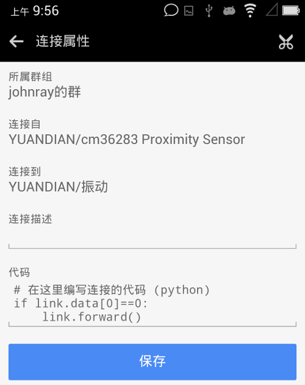

本实验在3个通道间展开，让nodewox按照预定意图协调设备工作。此称为联动。
课题
通常，PaaN设备中有靠近传感器，英文名proximity，此传感器可检测物体的靠近或远离。除了特别”节俭”的，一般手机都有此传感器，如不幸你的PaaN设备无此硬件，则本实验做不成了。
比如，我这台手机的proximity，当检测到有东西移入约1.5cm内时，会发出信号0；当物体从1.5cm内移出时，发出信号1。不同型号手机可能略有差异，但原理相似。
请nodewox实现：当手机检测到有物体移入到监测范围内时，发出振动，并点亮屏幕；而移出时不要。
实现
用PC浏览器操作
点击设备下proximity通道，进入该通道信息，并点击添加连接按钮

弹出框内列出在同组内，可供连接的候选端口。我们选中振动和唤醒屏幕 2个通道，按下确定
创建连接后，proximity通道信息页面变成这样：
然后，我们需要在连接上写点代码 (python)，以确保仅当检测到靠近信号时才触发 振动 和亮屏，而不是物体离开时。点击连接，打开其代码属性窗口：
2个连接的代码均为以下内容（假设你已具备python编程知识）:
其中，link代表本连接, link.data为传入本连接的数据（发自源端），语句link.forward() 将数据透传到目的端。
如果连接上无代码设定，则传入数据将透传到目的端。
用移动管理端操作
同样的操作，我们在移动端再做一遍。
逐级进入proximity通道的界面，选择添加连接菜单：
在选择连接对象界面（这里列出了可选的连接端口）选中振动和唤醒屏幕2个随动通道，按下确定按钮。
连接已创建，这时的proximity通道页面变成以下图示。此界面中，点击某连接项，可进入该连接的属性界面，进行编写代码。
以下是连接的代码编辑界面（注：代码内容请参考以上文字，而不要以图片为准。因为脚本环境可能已升级，而图片未更新）。

至此，已按要求设置好这个nodewox应用。
验证
一个通道可有若干配置项，PaaN的传感器通道均有一个启用/Enable配置项，此开关用于控制该通道是否启用。配置项可通过手工方式修改，也可通过其它设备修改。
因为是以测试为目的，所以PaaN设备中，各传感器通道默认都是关闭的。故启动本应用前，先启用proximity通道。让我们用手工方式开启这个通道。
从PC浏览器设置通道
按上图所示，此通道是关闭的(false)。请点击false，很快，此字样应变成true，表示通道已启用。若点击false后，迟迟未变成true，表示设备或浏览器未接入nodewox网络，请刷新浏览器，重新接入设备，或者检查你的互联网设施。
从移动端设置通道
在移动端修改通道参数的界面如下，请点击开启项目。
把玩
手机靠近传感器的位置，如图所示，不要弄错。
一手持PaaN，一手渐次近之。噫～感到振动否？屏幕点亮否？如你所愿否？
至此，应已感悟到nodewox之精髓 —— 设备协同，而这一切，均源自你的设计。是也者，庶几 “Software Defined Network” 之谓耶。